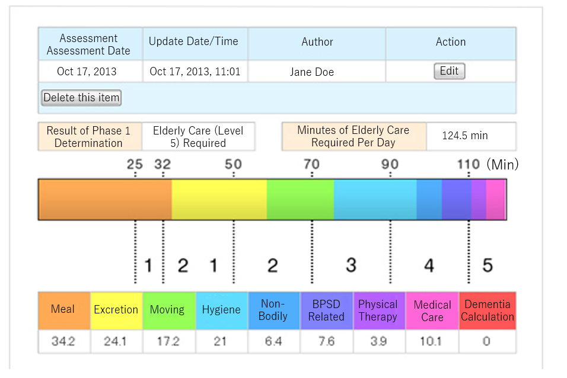
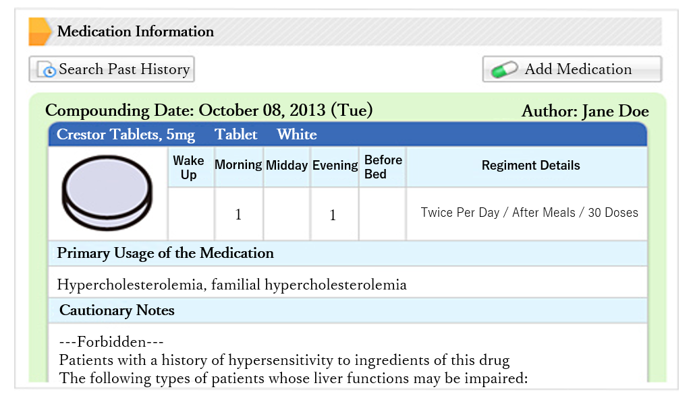

Supporting communication in medicine and nursing care In-home care system
Community comprehensive care is designed to realize the government’s initiative to build
communities where people can live worry-free. A critical component to this is “information sharing
in elderly care and in-home care”.
This can be realized through our cloud service. We have
continuously improved our model through repeated demonstrations and examinations in order to work
out the kinks and deliver a refined product to users at a low price.
Kanamic Cloud
The communication system our super-aged society needs
It is said that more than 60% of people would prefer to receive hospice care in their
homes as opposed to a facility. In order to make this a reality, an information sharing
system is essential for effective cooperation among professionals in in-home care,
nursing, and elderly care.
Kanamic supports our super-aged society through a cloud service specialized in medical
care, nursing, and elderly care.
Problems our cloud service can solve
We provide an indispensable tool for facilitating information sharing among
interdisciplinary and interorganizational professionals in medical care, nursing,
elderly care, and local governments.
Additionally, we develop advanced security measures to ensure peace of mind for our
users.
In-home Care System Concept
Information Sharing + Communication
In order to achieve a community comprehensive care system, it is necessary to promote the
advancement of in-home care and realization of interdisciplinary collaboration. Kanamic
network is attracting attention as the information sharing system that makes this
possible.
Our system supports team care by allowing seamless information sharing among medical,
nursing, and elderly care professionals.
Our system comes equipped with many high-function menus designed for interdisciplinary
and interorganizational information sharing. It not only aggregates a large amount of
shared information, but also has functionality that supports easy searching, browsing,
and data analytics.
We are proud to be the only information sharing platform for providing such high-quality
services to support elderly people continuing to live in the communities they spent
their lives in.
The big three functions of Kanamic’s information sharing system
The bulletin board format allows relevant parties to communicate with each other easily
without being burdened with scheduling considerations. It is a highly secured system
that allows for information sharing among restricted participants.
Users can
check other participants' “read” status, reactions, and comments, invigorating the
information sharing process.
With multi-device support, Excel, Word, and PDF files as well as photo and video files can be uploaded, allowing participants to share information in an easily understood format.
Users can browse stored information all at once and share information more smoothly.
Vitals information and in / out information are automatically uploaded to the care report in a timeline format, allowing the patient's current situation to be assessed instantaneously.
Users can check the status of community participants' care information and community
comments on the calendar.
Users can share scheduling information for doctor visits and nurse visits as well as
details on nursing care services provided. Users can share information stored in
work-related systems, such as nurse work records. Users can also check care reports on
the calendar.
Supports sharing of necessary information for interdisciplinary/interorganizational
collaboration that can be standardized
・Basic patient information
・Family information
・Use of elderly care service
・Medical information
・Home information
・Cognitive information
・ADL evaluation (Assessment of Activities of Daily Living)
・FIM evaluation (Functional Independence Measure)
・Medical history
・Thoughts on attendance at deathbed
The graphical and user-friendly interface makes this system easy to use in medical and
elderly care environments that involve people from diverse backgrounds.
Other high-functionality tools necessary for medical / nursing care

▲
“Certification for Long-term Care / ADL Evaluation” function

▲“Medical
Dosage Form” function
The Kanamic Cloud Service has been jointly researched with the University of Tokyo’s
Institute of Gerontology (IOG), and we have continued to conduct proof-of-concept
experiments and perfect the service through our model project.
As a result, our systems are packed with high-functionality tools and information
sharing capabilities based on feedback we’ve received from the frontline.
The “certification for long-term care / ADL evaluation" function can automatically
analyze user-entered assessment items and display the resulting determination in an
easily understood manner.
The medical dosage form function allows prescribed medication to be recorded by color,
using images and illustrations—and this information can be shared along with medication
contents and allergy information.
The system is constantly improving and evolving.
Usage Scenarios
【Scenario 1】
Cooperation among clinics (function-enhanced home care support clinic)
If you are a clinic or solitary doctor, for example, it is difficult to respond to emergency calls when you are on a business trip at an academic conference. In such situations, responders being able to check patient information in the cloud information system beforehand allows for a swifter response.
【Scenario 2】
Sharing information with in-home care doctors
Care notebooks are often placed at patients' bedsides, but there is a disadvantage in that it is impossible to view care notebooks without actually going on site. Replacing care notebooks with the cloud allows for information sharing among interdisciplinary professionals, and makes it possible to view care notebooks remotely, thereby allowing professionals to prepare for the visit ahead of time. In addition, this promotes a feeling that the patient is being supported by the entire care team, giving patients more peace of mind as they undergo treatment.
【Scenario 3】
Intradisciplinary information sharing
For example, users can create a room for doctor members and use it as a place to exchange
information that acts like a sort of groupware.
This capability has been used in
a number of ways, such as in-home doctors asking other doctors for advice about things
other than medical subjects and care managers discussing difficult cases on their
sharing page.